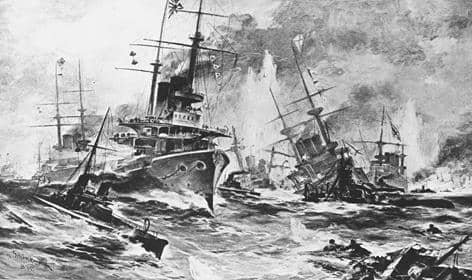
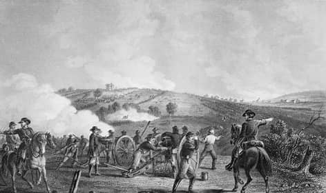

| Names |
Images |
Year of Battle |
Descriptions |
| 1.Battle of Waterloo |
 Image of Napoleon Image of Napoleon |
1815 |
The Battle of Waterloo was fought on June 18, 1815, near Waterloo village in Belgium.
It marked the final defeat of Napoleon Bonaparte, who had conquered much of Europe in the early 19th century.
The battle was fought between Napoleon's 72,000 French troops and the Duke of Wellington's army of 68,000 soldiers
aided by 45,000 Prussians.
The battle ended 23 years of recurrent warfare between France and other powers in Europe.
It is considered one of the most significant battles in European history as it marked the end of Napoleon's reign
and his ambitions for a European empire.
The battle also led to significant changes in Europe's political landscape and
paved the way for a new era of peace and stability on the continent. |
| 2.Battle of Tsushima |
 |
1905 |
TThe Battle of Tsushima was fought on May 27-28, 1905, during the Russo-Japanese War. It was a major naval battle
fought between Russia and Japan in the Tsushima Strait and southern Japan. The Japanese fleet under
Admiral Tōgō Heihachirō destroyed the Russian fleet, under Admiral Zinovy Rozhestvensky, which had traveled
over 18,000 nautical miles to reach the Far East1. In the fighting, the Russian fleet was effectively destroyed with
21 ships sunk and six captured. Of the Russian crews, 4,380 were killed and 5,917 captured2. Only three ships escaped
to reach Vladivostok, while another six were interned in neutral ports2.
The battle proved a decisive victory for the Japanese and marked a turning point in the Russo-Japanese War. |
| 3.Battle of Stalingrad |
.jpg) (Image of Stalingrad after war) (Image of Stalingrad after war) |
1942-1943 |
The Battle of Stalingrad was a major battle on the Eastern Front of World War II where Nazi Germany and its allies
unsuccessfully fought the Soviet Union for control of the city of Stalingrad (now Volgograd) in Southern Russia.
The battle lasted from July 17, 1942 to February 2, 1943 and involved fierce street fighting, siege, and counter-offensive.
It was the turning point of the war in favor of the Allies and resulted in the destruction of the German Sixth Army and other Axis forces.
The battle caused more than two million casualties, including civilians. The battle was a significant event in World War II and
led to increased tensions between Germany and its allies.
The conflict also highlighted the importance of intelligence gathering and surveillance in modern warfare.
|
| 4.The Battle of Marathon |
 (Image of Stalingrad after war) (Image of Stalingrad after war) |
490 B.C |
The Battle of Marathon was fought in 490 B.C. on the plain of Marathon, northeast of Athens.
It was a decisive battle in the Greco-Persian Wars, where the Athenians, with a smaller army and a clever strategy,
repulsed the first Persian invasion of Greece, led by Darius I, who wanted to punish the Greeks for
supporting the Ionian revolt. The battle was a turning point in European history, as it showed the
Persians could be beaten and paved the way for the rise of the Classical Greek civilization.
The battle also inspired the legend of a messenger running from Marathon to Athens to announce the victory,
which became the basis for the modern marathon race |
| 5.Battle of Gettysburg |
 |
1863 |
The Battle of Gettysburg was fought from July 1 to July 3, 1863, in Pennsylvania. It was the largest and bloodiest battle
of the American Civil War, involving around 160,000 soldiers from the Union and the Confederacy1.
After a great victory over Union forces at Chancellorsville, General Robert E. Lee marched his Army of Northern Virginia
into Pennsylvania in late June 18632. The battle resulted in a Union victory and is considered the most important engagement
of the American Civil War2. It was also the turning point of the war, as it ended Lee's attempt to invade the North and
secure the independence of the Confederate States of America1.
It inspired Lincoln's “Gettysburg Address,” which became one of the most famous speeches of all time2. |